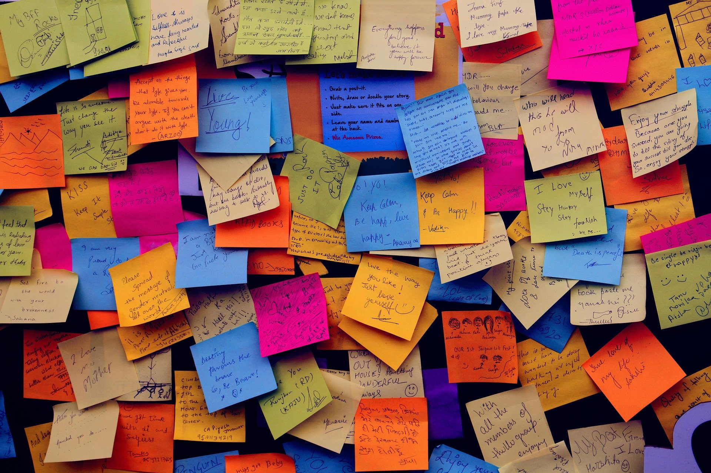

Hacking team communications
One of the daunting things in managing a team is being up to date with what is going on. On one hand, it’s crucial to be up to speed with the team’s progress, but on the other, I hate continuously asking about status or dreadful standup meetings. I guess being an individual contributor up until now, I remember not enjoying this type of management practices. It took me a while to figure out a technique that works well for my needs:
- Smart usage of communication channels
- Forming team communication habits

Communication can become quite messy
Smart usage of communication channels
The key here is utilizing the existing communication channels to the maximum without drowning in information. It can be accomplished by setting up smart notification and filters. If this sound too generic, here is the actual data sources and filtering mechanisms:
Emails
In short, filters and inbox zero. Filters are mandatory to avoid drowning in a sea of irrelevant information. As much as it sounds anti-social, I’m not really interested in new recruits across the company, and error emails of other teams aren’t my cup of tea either. The simplest way to ignore these is to have accurate filters on recurring and not relevant emails.
Once the filters are set up, I’m using the inbox zero methodology, so that anything that needs addressing is being addressed at that moment or snoozed to when it needs to be addressed. If it’s an ongoing thing, I turn it into a ticket.
Tickets
We use Trello where I work. Set up as a Kanban board, it allows to have multiple lists that represent the status of stuff, e.g. backlog, in progress, etc. The tickets are always sorted by priority in their list where a key requirement is to have the minimum viable number of tickets in each list. Our team has a board that holds all the work that we do, and if there are complex sub-projects that need their own board, the main board points to the sub-project board.
Having a single board, allows me to understand at a glance what are we working on at the moment and in what priorities. Since Trello allows to subscribe to any action on the board, I get a notification when someone updates his progress. I find it more convenient to use Trello’s in-app notification instead of receiving emails since it allows to respond more easily. One of the challenges is forming team communication habits, as I’ll discuss later on, and one is less likely to update his tickets without getting any feedback that someone is paying attention. Hence, a simple “+1” emoji can go a long way.
Each ticket gets assigned the relevant Pull Requests so that we can easily see the code that is being developed, Trello integrates nicely and shows the PR status (open/closed/merged) and the CI status (fails/success) on the ticket.
Pull Requests
Like with Trello, Github allows to subscribe to all activities on a certain repository, this is very convenient since I can be aware of what is going on in our code base, without being dependent on voluntary updates. If something is not interesting it’s possible to unsubscribe specifically from it hence decrease the notifications load. Also, on repos that are not directly developed by us, I subscribe just to PRs of interest to me. Here also, I canceled the email notifications and use Github’s in-app notifications, since it adds a few nice capabilities: marking all as read, muting and you can use the excellent notifications-preview-github to have quicker access to updates.
One thing I can’t stress enough is having team members open PRs as soon as possible. This helps to avoid so many headaches later on. Some devs are a little put off by this since it means coworkers will review (and judge!) their work before it’s fully done, but now with Github new “Draft PR” feature, it’s easier to explain to them that others know that this is not the final version. Making PRs early communicates the direction and the status of the project, it allows to give feedback before too much work has been invested. This, in turn, reduces conflicts since the dev getting the feedback is not busy defending the hours (if not days!) he spent.
Meetings
Meetings are a very important source for updates and planning, but too many of those kills productivity. Since so much of the manager’s day is invested in meetings, I try to make them shorter and more effective. A few ideas I use:
- Start with emails, then move to meetings - try to avoid setting meetings where an email can do the same job. If things are unclear or there is a conflict or a project is just stuck for no apparent reason, it’s time to move to a meeting since these issues are easier to resolve that way.
- Ask for meetings agenda - helps to make the meeting more productive and shows if the meeting is really needed. e.g. “Discuss latency” meeting title doesn’t say much.
- Ask to shorten meetings - a lot of times co-workers choose 1-hour spots for a meeting, this is a lot! They count on cutting it short if they don’t need all the time. I much rather have 30m meetings and scheduling another one if needed. Asking for shortening the meeting becomes pretty easy and not awkward with Google calender “suggest new time” feature. You just purpose less time and hope they accept it.
Forming team communication habits
Getting cooperation can be difficult
Now all these ideas are nice and dandy, but if your team doesn’t cooperate with you, it will never work. From my experience, a lack of cooperation is mostly a matter of changing habits. It’s pretty easy to start working on something without moving the ticket to “in progress”.
What I try to do is to convince the individuals in the team, why communication is important, and how if they don’t answer a mail or move a ticket or open draft PRs, it creates more communication load later on. I also let them know that I understand that programming is not something that can be interrupted every few minutes and that as far as I’m considered, checking their communication channels twice a day is enough.
Something I encounter often is that when team members don’t have anything meaningful to reply to a message they receive, they just, well, don’t reply. This makes sense, but it leaves the other side hanging. What I encourage them to do, is to reply “still in progress” or “will get back to you tomorrow on this”, so that the other person knows that things are in check.
Most of the times, just explaining what I expect communication-wise, doesn’t cut it since it requires a change of habits, so after the explanation part, comes the reminding part. For example - I ask a question on a ticket, once I don’t get a response within say 4 hours, I ask that person: did you check Trello recently? This may some patronizing, but when doing it in good spirit, people tend to take it in a good way and make an effort to be more aware. In my current team, this works out pretty nicely and I can see a real difference.
I find that while having good communication skills may not fit well with the image of a great developer (I’m looking at you Linus ☺️), it can provide him/her with the freedom and context needed to do great work. And as for engineering leads, this is our main role, to make sure we set up the environment for great work to happen.